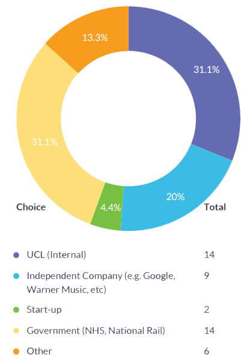
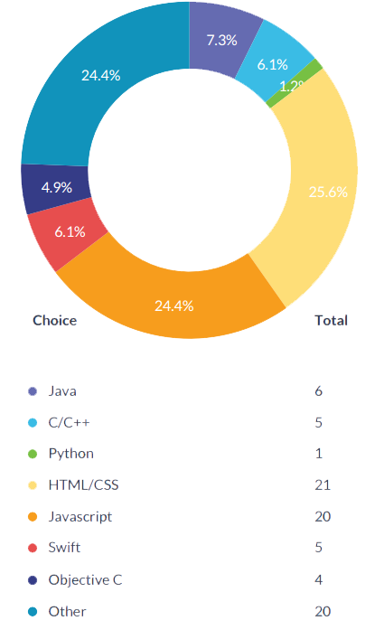
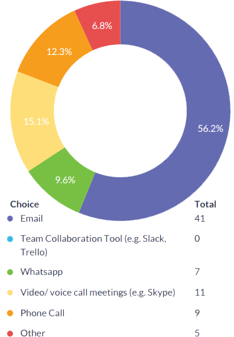
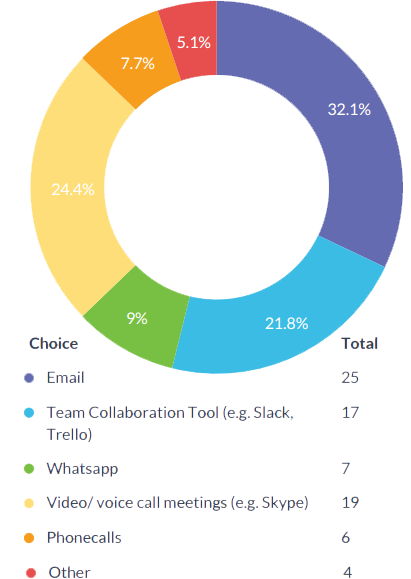

Our Research
- Online questionnaire
- Five One-on-one interview with students
- One-on-one interview with Teaching Assistant
- One-on-one interview with Supervisor
- General online based research
- Collaboration questionnaire result extraction with fellow UCL Student
Online Questionnaire Research
Participants: UCL Computer Science Students
(Based on their experience on last year’s team project).
In order to improve the existing team management system flow within university, we conducted our very own research within UCL Computer Science students. The research was conducted in order to build a more improved team management tool that will make it easier for both parties; students and university staff in project placement. The results were collected from October 2015 until December 2015 by using online survey platform, Survey Planet. The questionnaire was distributed through Facebook group, whatsapp, and emails within Computer Science students in UCL particularly 2nd year students.
There are 16 questions in total, consisting:- 6 Multiple Choice questions
- 8 Differential Scale questions
- 2 Open questions
Participants consisted of 43 students from second year (around 56% of total students in second year) and 8 students from other years. Over half of the participants were male (61.3%), 25% were female and the rest prefer not to say.
In order to find out what kind of project the participants did last year, they were asked to answer some questions regarding their client company and what kind of programming languages that they used to build the project. To narrow it down to team management system issue, there were also asked to list all of the communication tools that they used to communicate with the client and also the tools that they wish they would have used. Following this question, respondent were asked to scale their client responsiveness without mentioning the current tool that they were using, in order to avoid bias answer.
Respondents were asked to rate their current skills and interest before and after the project in order to measure their satisfaction after completing the project and using the current system to manage communication within the project. Open questions including their issue regarding communication with the client and suggestions for next year’s project placement planning.
There were several uncertainty factors in this study. First, since most of the questions were opinion based, the outcome might be inaccurate. Moreover, in order to attract prospective respondent’s interest to answer the questionnaire, the questions had to be limited and we had to cut off some questions. Lastly, since it was difficult for us to access some respondent from other years, the responses rate was quite low from participants other than year two students hence the result may be not as representative as we wanted.
It was firmly mentioned that all information will be recorded anonymously and responses will not be identified by individual names. Moreover, respondents understand the indication of their participation as well as the purpose of the study. Their participation in this study is voluntary and participants had the right to withdraw from the research at any time.
The study was conducted to indicate factors that need to be improved from the current team management system within UCL Computer Science project placement.
Skills Improvement
The research shows some interesting result such as out of all programming languages, the most significant languages that were used by the participants were not the languages that were taught officially by the course (Java and C) by other means, most participants have learnt new languages or improving their self-taught skills by taking part of this module.
The respondents’ technical experience rate average before the project is quite low (1.95 - less than half) and the number increases to 3.05 after the project which means that most participants have learnt more technical skills after the project.
Client Communication
Based on this study, most participants used email as their communication tool with the client (over than half responses). However, after the project finished, the percentage dropped to 32.1% and some of the responses stated (on the open question) that sometimes the client did not respond on time/before the module deadline and was not very responsive in answering emails. In the contrary, the average of the participants’ opinion on their client’s responsiveness is quite high (3.05 out of 5) which means email is still needed in project communication. In addition, Team Collaboration tools such as Slack and Trello shows significant difference. Zero participants used the team collaboration tool during the project and after the project, around 21.8% of them prefer they would have Team Collaboration tools. This shows that most students demand the use of team collaboration tool during the project as well as using email.
Gender Factor
From this study, it shows that male participants tend to have more confidence in their technical experience before and after the project than female (male average: 2.16 to 3.16 female average: 1.27 to 2.82 respectively). However, female participants tend to have more interest on the project rather than male, both before and after the project (male average: 2.64 to 2.7 female average: 2.9 to 3.27 respectively). The rate of satisfaction of working with the client between female and male is not significant (0.01 difference).
-
How would you describe your client company?

Figure above shows the type of companies which the participants worked with last year. Most of the projects were internal projects for UCL (31.1%) and Government (31.1%) Independent company (20%) and start-up with the least percentage of 4.4%. -
What programming language(s) did you use in your project?

The graph above illustrates the most significant programming languages that were used by students in their project last year. HTML/CSS is the most significant with 25.6% followed by JavaScript (24.4%) with Python as the least significat. Other language option includes TouchDevelop, PHP, MySQL and C#. -
What tools did you use to communicate with the client?

As shown in the figure above, Email is still preferred as the most efficient tool that most of the student use to communicate with the client with 56.2%, followed by video/voice call meetings with 15.1% and surprisingly, team collaboration tool such as Slack and Trello were not being used at all by all of the participants. Other option includes Facebook Messenger and meetings in person. -
What tools would you have preferred to use to communicate with the client?

The statistics above shows that email is still popular as the tool to be used in the future with 32.1%, although the percentage goes down from the previous graph with 56.2%. Other interesting result is 21.8% participants wished they would have used team collaboration tools such as Slack and Trello, increased from 0% (previous graph). Other option includes Viber and meetings in person.
From the scaled questions, the results obtained are:
-
is the average of the participants' technical experience in the programming languages BEFORE the project started.
-
is the average of the participants' technical experience in the programming languages AFTER the project finished.
-
is the average of the participants' opinion on their client's responsiveness.
-
is the average of the participants' interest on the project BEFORE the project started.
-
is the average of the participants' interest on the project AFTER the project finished.
We have also analysed the result based on gender. The graph can be found on the document below:
One-on-one Interview Research
Participants: UCL Computer Science Students, Teaching Assistant, Supervisor
(Based on their experience on last year’s team project).
Student 1
Conclusion of the interview:- For last year’s object oriented programming project, emails and phone calls were the main methods used to contact the client.
- Never met face to face. The student would have preferred more meetings face to face so the client can clearly see the problems and what is going well.
- The student claimed that it was mainly them calling/ getting in contact with the client (as opposed to the client getting in contact with the team)
- The student wasn’t very happy with the communication with the client as the client often took too long to reply, and didn’t seem too interested with the project
- The student was pleased with the fact that the client gave clear requirements at the start of the project(their client at the moment does not know exactly what he wants, and this causes some trouble for the team)
- The student believes that there is good communication with their client for the project at the moment.
- The student would like an easy way to share team and project progress with the client.
Student 3
Conclusion of the interview:- Mainly communicated through so many emails. They sometimes had meetings.
- Would sometimes call the client for urgent matters.
- The team communicated with the client as often as they needed to (the team claims that their side wasn’t an issue)
- But they weren’t very happy with their client. He replied to their emails on time, but expected too much and didn’t know what he wanted.
- The team had many issues, and weren’t happy with their client but found it difficult to bring those issues up as the client was an important person
- Whatsapp was used for easy messaging between the team - files were sent/ shared on dropbox
- The team enjoyed using Dropbox as you can easily see the code and updates
- Would like the platform to have integration with dropbox and slack
- Would like the platform to have private groups (so you can communicate just within the team)
- It would be good to have activity logs within the platform
- Importing Gantt charts for project will be very useful
- It would also be useful if the client could set deadlines through the platform
Student 2
Conclusion of the interview:- Email was the main form of communication with the client
- the student claimed that the communication was bad overall
- Conference calls would fail/ contact details weren’t working
- The student was not very interested in the project (the idea of the application)
- The studnet was pleased that the client was very clear with the requirements.
- The student would have preferred to speak more with the client throughout the project so that she could share their team’s progress.
- Thinks that having a live chat with the client is a good idea
- In her current project she is going to have a meeting with her client every two weeks (set by email)
- Has heard of Slack, but has not used it yet